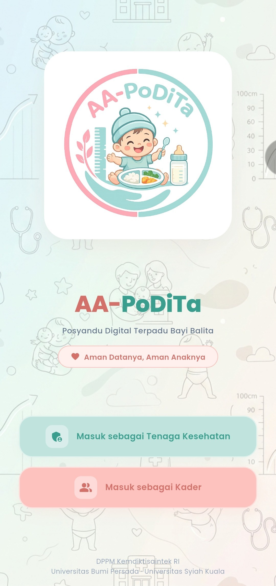

AA-PoDiTa (Posyandu Digital Terpadu) membantu kader dan tenaga kesehatan dalam mencatat, memantau, dan menganalisis status gizi balita secara cepat dan akurat.
Diperbarui: 22 Juni 2026
Bebas virus & aman digunakan

Aplikasi ini dirancang khusus untuk mempermudah tugas di lapangan.
Status gizi anak dihitung langsung oleh aplikasi menggunakan standar pertumbuhan dari WHO.
Pantau riwayat perkembangan berat dan tinggi badan balita setiap bulannya secara visual.
Catatan riwayat keluhan dan riwayat medis anak tersimpan rapi selayaknya Buku KIA versi elektronik.
Data posyandu tersimpan dengan aman dan hanya dapat diakses oleh pihak yang berwenang saja.
Ikuti 3 langkah mudah di bawah ini untuk memasang file APK.
Klik tombol Unduh Aplikasi di atas. File bernama AA-PoDiTa.apk akan terunduh ke HP Anda.
Buka file tersebut. Jika muncul peringatan keamanan, pilih Pengaturan lalu aktifkan "Izinkan dari sumber ini".
Klik Install / Pasang. Tunggu beberapa detik, lalu aplikasi siap digunakan oleh kader.
Pengembangan aplikasi Posyandu Digital Terpadu merupakan hasil kolaborasi dari berbagai institusi.
DPPM Kemdiktisaintek RI • Universitas Bumi Persada • Universitas Syiah Kuala